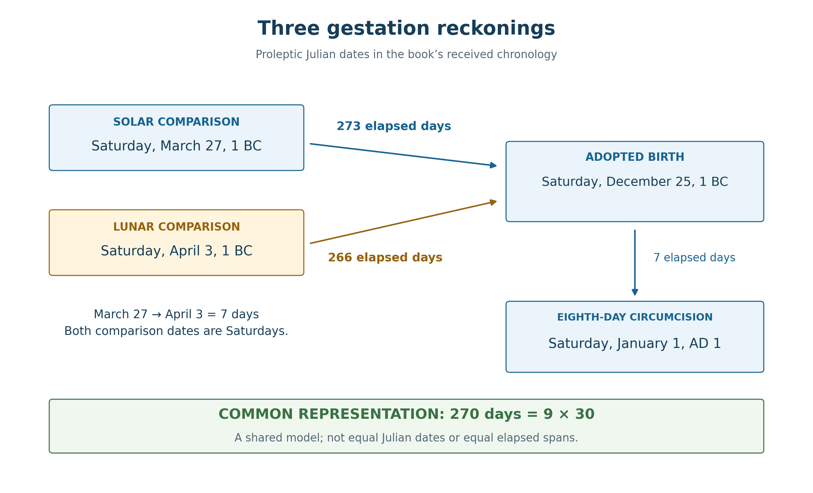
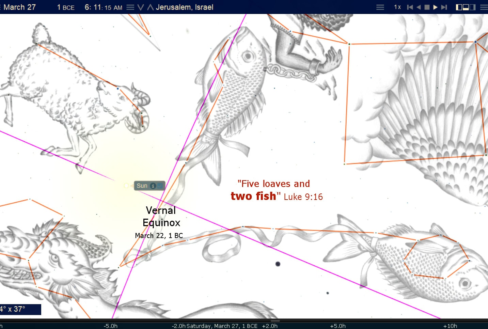
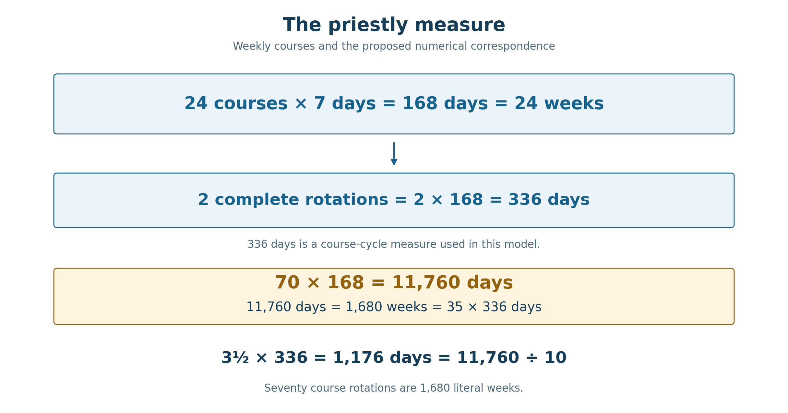
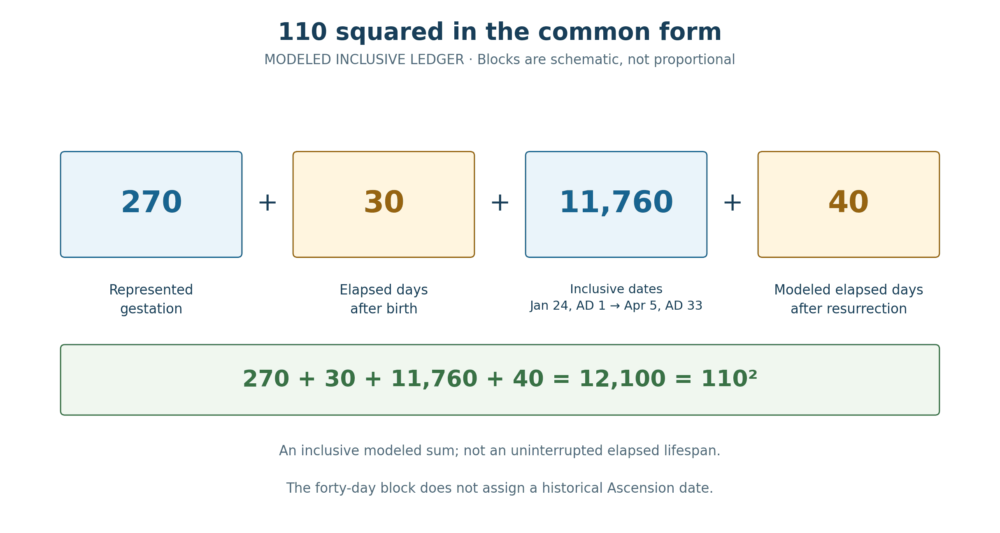

Book 1 · The Cross at the Center of Time · Chapter 8 of 18
The days of the living Temple, from the covenant sign to the Cross
“It was full of large fish, 153, but even with so many, the net was not torn.”
— John 21:11
John leaves us with a count. After the empty night, the command from the shore, and the sudden abundance, the fish are brought to land and numbered: 153. The risen Lord prepares a meal. Peter, who had denied Him, will again be called to love and follow Him.
I want to remain beside that net long enough to ask what its number may disclose. John's Gospel has already taught us to look through the visible toward the living reality it reveals. The temple saying concerns Christ's body. Bread becomes the setting for His declaration that He gives His flesh for the life of the world. Water, darkness, light, and a shepherd's voice carry more than their immediate circumstances. The fish are real fish, and the breakfast is a real breakfast; their reality gives the sign its substance.1
The previous chapters followed the measures of years, festivals, and offerings. Here I bring that inquiry to the days of Christ's life. If His body is the true Temple, a measurement in days may belong beside a measurement in cubits. What emerges is a correspondence I find especially moving:
77 × 153 = 11,781.
Within the received chronology adopted in this book, 11,781 is the inclusive count of dates from His eighth-day circumcision to the Cross. Forgiveness, the harvest, and the living Temple meet within one product. I do not believe the beauty of that meeting is exhausted by the multiplication.
In this chapter
- Counting from the covenant sign
- Three Sabbaths at the beginning
- Peter and the measure of mercy
- A fire on the shore
- From Ezra's lambs to Christ's fish
- The Lamb and the two fish
- Four beginnings of a single life
- The priestly measure
- A square in the common-form ledger
- Thirty years and the ministry's endpoint
- The number brought to shore
- Sources and notes
Counting from the covenant sign
The starting framework remains the one established earlier: a birth commemorated on December 25, 1 BC; circumcision and naming on January 1, AD 1; and the preferred Passion date of April 3, AD 33. The first two belong to the received Christian chronology used here. Their place in tradition is a real witness, while the historical date of the Nativity remains a separate question. AD 30 retains its alternative and comparative role; the calculation before us uses AD 33.2
All ancient civil dates in this calculation are Julian. There is no civil year zero: 1 BC is followed by AD 1. Counting December 25 as the first date makes January 1 the eighth, seven elapsed days later. This is the circumcision relationship described by Luke, applied to the book's adopted birth date.
Table 1 — The adopted dates and their midnight Julian Dates
| Event in the adopted framework | Julian civil date | JD at the date's beginning |
|---|---|---|
| Birth | December 25, 1 BC | 1,721,416.5 |
| Circumcision and naming | January 1, AD 1 | 1,721,423.5 |
| Crucifixion | April 3, AD 33 | 1,733,203.5 |
| Resurrection | April 5, AD 33 | 1,733,205.5 |
Subtract the starting midnights of the circumcision and Crucifixion dates:
1,733,203.5 − 1,721,423.5 = 11,780 elapsed days.
Now count both named dates, including the first and last:
11,780 + 1 = 11,781 dates = 77 × 153.
Those 11,781 complete civil dates also form an exact midnight-to-midnight window: January 1, AD 1 at 00:00 to April 4, AD 33 at 00:00. That is 11,781 full days, or 1,683 weeks. The window includes all of Crucifixion Friday. These civil boundaries do not assign midnight to the circumcision or to Christ’s death.3

The 11,781 included dates run through Crucifixion Friday and close at the following midnight. The two Nisan 15 midnights use the earlier Synoptic and later John reckonings. Here, noon marks Christ on the Cross and the beginning of darkness; death comes later. The forgiveness line paraphrases Matthew 18:22; ×153 is the comparison proposed here.
Rome's civil reckoning thereby enters the comparison. Its midnight boundary gives the numbered dates a common edge. The Christian era, assigned retrospectively, places the January covenant datum at its beginning. Rome did not use the label “AD 1” at the time, yet the later received chronology places Christ's naming at that threshold. I see providential meaning in this inheritance: the calendar of the empire that crucified Him becomes one of the witnesses gathered around Him.4
The darkness at the beginning of a civil date and the darkness over the Cross also invite contemplation. In the wider Passion arrangement, noon stands midway between the two proposed Passover midnights. That relationship remains distinct from the long inclusive count. Each has its own scale, and each directs my attention toward the same center: Christ bearing the world's darkness within His redeeming work.
Three Sabbaths at the beginning
The opening dates carry a further weekly relationship. On the proleptic Julian reckoning used here, December 25, 1 BC and January 1, AD 1 are Saturdays. The circumcision thus returns to the weekday of the birth, as an eighth-day observance must do.
Chapter 6 supplied the 273-day comparison from Isaac's conception and birth in Jubilees. It is three regular Enochian quarters: 3 × 91 = 273. Count that interval backward from the adopted December birth, and the resulting date is March 27, 1 BC, also a Saturday. The proposed beginning, birth, and circumcision therefore form three Sabbaths within this construction.5
Table 2 — Backward comparisons from December 25, 1 BC
| Comparison | Interval before birth | Resulting Julian date | Weekday |
|---|---|---|---|
| Three regular 91-day quarters | 273 days | March 27, 1 BC | Saturday |
| Thirty-eight complete weeks | 266 days | April 3, 1 BC | Saturday |
| March 25 conception tradition | 275 days | March 25, 1 BC | Thursday |
March 25 has its own traditional association with the Annunciation. Its place in Christian commemoration should remain visible. The exact 273-day calculation, however, leads to March 27. Keeping those dates distinct allows each witness to say what it actually says.
The 266-day comparison is seven days shorter than 273. It gives thirty-eight weeks and can serve as the selected whole-day lunar-gestation illustration considered earlier. Nine astronomical lunations are not invariably 266 whole days, and an actual nine-month lunar interval depends on its month lengths. Here 266 is the stated example. It leads to April 3, 1 BC, another Saturday.


Counting backward from the adopted birth on December 25, 1 BC, gives March 27 at 273 days earlier and April 3 at 266 days earlier. In the comparison used here, both gestation measures are represented as nine thirty-day months, or 270 days. This gives them a common numerical form while preserving their different elapsed lengths.
Within the Wednesday-start solar template, a fourth-day-of-the-month Sabbath can recall the rest following the six days of creation. A proposed lunar Nisan 10 can recall both the selection of the Passover animal and Israel's crossing of Jordan. Assigning those Nisan labels to the Julian conception comparisons requires the corresponding calendar's New Year and month beginning. I retain their typological associations without making date subtraction alone establish those calendar settings.6
The three Sabbaths suggest to me a 7–7–7 beginning: life hidden in the womb, life brought into the world, and the covenant sign impressed upon the child. I read that fullness beside Revelation's 666, with its summons to discern the beast's number. The contrast is my theological reading of the adopted dates; Revelation itself does not label these three events 777.
Jesus' later defense of healing on the Sabbath brings circumcision and wholeness together in John 7:23. The eighth-day command could require circumcision on a Sabbath. In this received chronology, His own circumcision falls there too. That correspondence gives the saying a personal resonance for me, although John does not date the childhood ceremony. The Lord of the Sabbath enters the rhythm He will bring to its fulfillment.
Peter and the measure of mercy
The first factor in our product, 77, draws me to Peter's question about forgiveness. He asks whether seven acts of forgiveness will suffice. Jesus answers:
“I tell you, not just seven times, but seventy-seven times!”
— Matthew 18:22
The Berean Standard Bible prints seventy-seven and notes the alternative seventy times seven. Both readings have a long place in translation. One supplies 77; the other supplies 70 × 7 = 490. Either way, the surrounding parable turns Peter away from keeping a manageable account of another person's offenses toward the mercy he himself has received.7
Genesis provides an earlier seventy-seven that makes the answer still more arresting. Lamech multiplies vengeance to seventy-sevenfold. Read beside that boast, Jesus' answer reverses the direction of multiplication. Human violence keeps enlarging its demand for repayment. The kingdom enlarges forgiveness. The recurring number moves from retaliation toward reconciliation.
That is the movement I hear when 77 meets John's 153. The first number has acquired the sound of mercy in Christ's teaching. The second lies before the restored Peter in an overflowing net. Their product numbers the included dates from the covenant sign to the Cross within the received chronology.
Christ's life gives His teaching its substance. He was born under the Law, as Paul says; circumcision supplies a visible covenant marker within that life. From the helplessness of infancy through the obedience of His earthly course, He moves toward the giving of Himself. The final included date brings us to the sacrifice through which our debt is canceled.8
I therefore read the multiplication as a measure of forgiveness embodied. It does not set a limit on mercy at the seventy-seventh offense, nor reduce the people gathered by Christ to 153 souls. The numbers give the pattern its form. The gift to which they point exceeds our accounting.
A fire on the shore
John's breakfast scene gives that reading a human face. Seven disciples have gone fishing. Jesus stands on the shore. At His direction the empty night's labor becomes a great catch, and Peter brings the net to land. The Lord already has bread and fish prepared.
Christ comes to them. Their labor receives its abundance from His word; their meal receives its welcome from His presence. Seven disciples gathered with the risen Lord give a 7 + 1 company at the encounter: the seven come from the boat to meet Him on shore.9
Scripture has prepared us to notice such a passage through seven into eight. Eight persons are preserved through the Flood. Circumcision marks the eighth day. The birth and circumcision dates in the adopted framework stand seven elapsed days apart. The breakfast joins seven named or counted disciples to their living Lord. These are different kinds of count—persons, elapsed intervals, and ordinal days—but their recurring shape invites comparison.
Peter's history makes the scene tender. He has denied Jesus three times. Now Jesus questions him three times about love and entrusts His people to his care. John records the hurt occasioned by the third question. He does not tell us that Peter went fishing because he feared he had exhausted a numerical allowance of forgiveness. When I imagine his shame or recognize my own in him, I am entering the story meditatively, rather than reporting an unrecorded calculation in his mind.
There is, however, a concrete link between the two scenes. The charcoal fire of the denial returns as the charcoal fire of the breakfast. The same Greek noun occurs in John 18:18 and 21:9. Beside the first, Peter denied his Master; beside the second, the risen Master restores his vocation. The place of warmth associated with his failure becomes a place of welcome.10
John also describes Peter putting on his outer garment before entering the water. He hastens toward the One he failed. In that movement I recognize the hope of shame overcome: Peter is drawn toward his Master, who feeds him, questions him, commissions him, and finally calls him to follow even along the costly path just disclosed.
Breakfast, the three questions, and the prediction of Peter's death lead into the call to follow. The whole encounter belongs together. The great catch surrounds a renewed commission. I hear the number 153 within that larger act of mercy: provision from the risen Lord, and a restored servant sent to care for others.
Paul's language in Colossians 2 gives this mercy a covenant setting. He joins a circumcision not performed by human hands with burial and resurrection in Christ, forgiveness, and the cancellation of the debt against us. The debt is ours, and the sinless Christ gives Himself to remove what condemns us. The bodily sign at the beginning of our count and the Cross at its end thus belong within a biblical relationship already richer than the arithmetic.11
From Ezra's lambs to Christ's fish
The 77 also reaches backward to Ezra's arrival offering. As Chapter 6 established, Ezra 8:35 numbers twelve bulls, ninety-six rams, seventy-seven lambs, and twelve male goats. The lambs form one group within 197 animals. Their 77 should retain that particular identity.
In the Repository's Ezra decree framework, 458 BC and AD 33 stand 490 civil years apart:
458 + 33 − 1 = 490.
The subtraction accounts for the absence of a civil year zero. This is the year-level Ezra-to-Passion frame. It does not establish that Ezra's arrival offering and the Crucifixion occurred on the same anniversary date.12
The lambs at one end and the fish near the other now speak beside the two readings of the forgiveness saying. Seventy-seven is the number of Ezra's lambs and the BSB's main reading in Matthew. Seventy times seven gives the 490-year frame. The 153 belongs to John's Resurrection encounter. Joining 77 to 153 gives the 11,781-date correspondence.
Table 3 — Textual numbers and the relationships I draw from them
| Biblical setting | Recorded number | Relationship in this reading |
|---|---|---|
| Ezra 8:35 | 77 lambs within an offering of 197 animals | Restoration and the lambs of the return |
| Matthew 18:22 | Seventy-seven; alternatively seventy times seven | Forgiveness, with 77 and 490 readings |
| John 21:11 | 153 large fish | Abundance in the risen Lord's gathering |
| Adopted circumcision-to-Cross dates | 11,781 inclusive dates | 77 × 153 |
The biblical narratives supply their numbers. The multiplication and chronological joining are the reading I propose. This is the same movement considered in Chapter 6, where the altar's animals were read beside days and years. The text does not explicitly call Ezra's lambs seventy-seven days or John's fish 153 days. Their temporal role emerges within the comparison.
The return from exile restores worship around the house of God. Christ identifies His own body as the Temple that will be raised. At the breakfast, the Lord entrusts His lambs to Peter. Lambs, the living Temple, and the gathered fish therefore have a narrative and theological relationship before we multiply their counts.
Isaac's beginning remains close at hand. The 273 + 7 = 280 conception-to-circumcision comparison now meets a count that begins with Christ's circumcision and reaches His sacrifice. File 58's altar progression, 270 → 273 → 280, keeps the same movement visible within the Numbers ledger. I see the earlier covenant sign opening toward the One in whom the promise receives its fullness.13
The Lamb and the two fish
The fish also draw my eyes upward. John's Gospel opens its public testimony to Jesus with the Lamb of God and closes with the risen Lord beside a catch. Between those scenes, five barley loaves and two fish become the setting for the feeding sign. The five and two supply another seven, while the bread discourse directs us toward the flesh given for the world's life.
I read these earthly signs beside the familiar celestial figures of Aries, the Ram, and Pisces, the Fishes. In that contemplation the sacrificial animal and the gathered fish suggest a passage from offering to harvest. The two fish bound together can become an image of Jew and Gentile held within one saving purpose. That is the Christian association I bring to the picture; it is not an astronomical identification of those peoples.


The inherited illustration is labeled March 27, 1 BCE at Jerusalem; its separate equinox annotation reads March 22. The scene is retained as an image of the proposed Lamb-and-fish relationship. Its surviving settings do not independently establish a Julian conception date or the boundary of a precessional age.
Precession gives this contemplation a much longer horizon. The equinox moves relative to the stars over a cycle of roughly twenty-six thousand years. The often-used 2,160-year age comes from dividing a schematic 25,920-year cycle into twelve equal parts. Equal zodiacal divisions, constellation figures, and modern constellation boundaries are different ways of organizing the sky. They do not supply one universally fixed date for the beginning of an Age of Pisces.14
I therefore let the image carry its prophetic association without making an exact age-boundary calculation bear the chapter's argument. The harvest can extend far beyond the disciples' immediate expectations. The risen Christ gathers through generations, and the final catch invites me to contemplate the breadth of that work. Book 2 will give the celestial relationships their fuller examination.
Four beginnings of a single life
Conception, birth, circumcision, and firstborn redemption supply four distinct points from which to consider the incarnate life. They are not four rival beginnings of Christ's existence. They disclose different relations: hidden formation, entrance into the world, the bodily covenant sign, and the redemption requirement attached to Israel's firstborn sons.
The last needs particular care. Numbers 18:16 gives a month-old threshold for redemption and a valuation of five shekels. Numbers 3 likewise counts the Levite males from a month old. These provisions concern redemption and census eligibility. They do not declare that an infant lacked personhood before a thirtieth day, or that Jesus first became capable of redeeming others at that age.15
Luke records the eighth-day circumcision and naming, followed by the purification and presentation associated with the Law. The month-old redemption provision must remain distinct from the forty-day purification framework. Luke does not give us a civil date or receipt for a five-shekel payment for Jesus.
For the numerical comparison, I select a thirty-full-day post-birth interval, the schematic month used in the common reckoning. From the adopted December 25 birth, that interval ends on January 24, AD 1. Counting January 24 through the adopted April 5, AD 33 Resurrection date inclusively gives:
11,759 elapsed days + 1 = 11,760 included dates.
The selection is explicit. January 24 is thirty elapsed days after the birth date; it is the thirty-first date if the birth itself is called Day 1. Calling January 23 the ordinal Day 30 produces a different boundary. The Torah's month-old wording does not itself select either Julian date. January 24 is the boundary of the thirty-day model examined here.16
This preserves a second exact correspondence without inventing a childhood event. The first uses the adopted circumcision and Crucifixion dates. The second uses a selected thirty-day boundary and the adopted Resurrection date. Both are inclusive counts, and their conditions remain visible.
The priestly measure
The 11,760 has a remarkable priestly expression:
11,760 = 70 × 168 = 35 × 336 = 24 × 490.
The unit throughout this application is days. The 168 is twenty-four weeks: 24 × 7 = 168 days. It is the single-round measure of the twenty-four priestly courses. Two such rounds give the Repository's foundational priestly ledger of 336 days. Consequently, seventy rounds are thirty-five schematic priestly years and 1,680 complete weeks.17


The factors use days throughout. Seventy 168-day rounds are 1,680 weeks. The 336-day ledger measures the course architecture; it remains distinct from a 360-day common year and a regular 364-day year.
The weekly-course organization has a scriptural and historical basis. Its 336-day total is the mathematical baseline of this priestly register. Calendar alignment and festival service introduce further questions about historical execution. Four additional weeks would bridge 336 to 364, but those weeks do not enter the baseline course count merely because the two totals can be related.
The same product appears elsewhere in the canonized chronology. File 61 gives 11,760 = 35 × 336 = 24 × 490 within a cumulative span measured in years. Here the recurrence is at the scale of days. That is a meaningful numerical comparison; the cumulative-year dates and the childhood-to-Resurrection construction remain distinct applications.18
Another proportion follows:
3½ × 336 = 1,176; 1,176 × 10 = 11,760.
In the common prophetic register, three and a half years are 1,260 days. In the priestly register they are 1,176. The shared year designation permits the ministry's half-week to be represented in each form. It does not make the two day totals the same elapsed interval. Within the priestly representation, the ministry-sized portion is one tenth of the larger 11,760: a consecrated portion within the whole.
I see in this relationship the Priest who gives Himself and lives beyond death. Friday displays the King rejected; Sunday displays His victory and the living efficacy of His priesthood. These emphases belong together. He does not cease to be Priest on Friday or first become King on Sunday. Hebrews joins His enduring priesthood to indestructible life and His once-for-all offering.19
A square in the common-form ledger
Revelation 11 opens with a measuring reed and the command to measure God's temple, altar, and worshipers. Reading that scene beside John's identification of Christ's body as the Temple, I turn the inquiry toward the dimensions of His life. The living Temple gives the act of measurement its personal center.
The larger measurement brings us to 110² = 12,100. To see exactly what kind of measurement this is, I set out its four blocks.
Table 4 — A modeled inclusive count toward the Ascension
| Block | Count | Convention within this construction |
|---|---|---|
| Conception to birth | 270 | Nine months represented in the common form; native solar comparison 273 |
| Birth to the selected month boundary | 30 | Thirty full elapsed days, reaching January 24, AD 1 |
| Selected boundary through Resurrection | 11,760 | January 24, AD 1 through April 5, AD 33, inclusive |
| After Resurrection to the modeled closing boundary | 40 | Forty full days after the Resurrection date |
| Total | 12,100 | 110 × 110 |
The addition is exact:
270 + 30 + 11,760 + 40 = 12,100 = 110².
The central block counts both of its boundary dates. The surrounding intervals supply the days before and after it without counting those boundaries twice. Only the gestation block is expressed here in the common form of 270 days. The selected thirty-day childhood interval, the 11,760 included dates, and the forty-day closing block retain the counts just stated. The total is therefore a modeled ledger, rather than a uniform conversion of the whole life to 360-day years.20


The 270 is a common-form representation of the 273-day solar comparison. The forty-day closing interval is a model choice, rather than an independently established Ascension date. Under these conventions the modeled inclusive total is 12,100.
Acts places the appearances within forty days. A traditional Ascension counted as the fortieth day includes the Resurrection date and thus lies thirty-nine elapsed days later. That convention would change this ledger by one. Retaining the full native 273-day gestation would add three. The square therefore belongs to the stated construction; it is not an independently verified Julian conception-to-Ascension duration. I want its form to be available for contemplation with its actual foundations in view.
Joseph and Joshua give 110 a biblical setting. Both die at 110. Joseph is thirty when he enters Pharaoh's service. The Repository's reconstructed Joshua chronology likewise makes him thirty at the Exodus, but his age there is not supplied explicitly in Scripture. The paired thirties belong together as a textual datum and a chronological reconstruction, rather than two equally explicit age statements.21
The Egyptian setting also belongs in the gathering. Egyptian literature can present 110 as the ideal completion of a human lifespan; the Instruction of Ptahhotep closes with such an attainment. Joseph's 110 is therefore at home within the land where his story unfolds. The Egyptian ideal is a full human life, while the Christian hope reaches beyond death itself. I read the square of 110 beside Hebrews' testimony to indestructible life as a typological intensification of completeness, rather than a claim that 110 was an Egyptian word for immortality.22
File 61 provides a further, carefully bounded parallel. Its cumulative Adam-to-Joseph-boundary comparison gives 14,006 − 1,906 = 12,100 = 110². That canonical result is measured in years, with its own defined chronological boundaries. The common-form life ledger here carries the same square in days. Their numerical agreement enlarges the field of comparison without making them independent proofs of an actual conception or Ascension date.23
The first two blocks also preserve a simple tenth:
270 + 30 = 300; 30 = 300 ÷ 10.
A month of consecration stands beside nine represented months of formation. In the priestly comparison, 1,176 = 11,760 ÷ 10 gives another tenth. I read these proportions as tithes within the measured life: portions set apart within larger wholes. Numbers 14:34 and Ezekiel 4:6 give explicit biblical settings for days representing years; their use here is a typological extension, not a universal rule that automatically converts every childhood day into an adult year.
Thirty years and the ministry's endpoint
One relationship can now be stated more precisely than before:
10,800 + 1,260 = 12,060.
The common reckoning names 10,800 as thirty years of 360 days and 1,260 as three and a half such years. Chapter 5 also expressed the total as thirty-three regular years with six additional thirty-day months: 33 × 360 + 180 = 12,060. The two operations give the same total, with their different arrangements preserved.
There is a striking Julian correspondence. The proposed March 27, 1 BC solar conception comparison stands 12,060 elapsed days before April 3, AD 33, the adopted Crucifixion date. If a ministry interval of 1,260 elapsed days is placed immediately before that date, its starting boundary falls on October 21, AD 29. That boundary is exactly 10,800 elapsed days after the proposed conception.24
Table 5 — A conditional ministry construction in Julian dates
| Boundary | Julian date | Elapsed days from the previous boundary |
|---|---|---|
| Proposed solar conception comparison | March 27, 1 BC | — |
| Calculated ministry boundary | October 21, AD 29 | 10,800 |
| Adopted Crucifixion date | April 3, AD 33 | 1,260 |
| Adopted Resurrection date | April 5, AD 33 | 2 |
This construction has an autumn AD 29 opening, consistent with the seasonal form of a roughly three-and-a-half-year ministry leading to spring AD 33. October 21 is the output of the chosen interval, rather than an independently attested baptism date. A spring conception in 1 BC followed to the same anniversary in AD 30 gives thirty civil years. That anniversary count is a different measure from the 10,800 days obtained by multiplying thirty schematic years by 360.
Luke describes Jesus as about thirty at the beginning of His ministry. That wording remains appropriate. Luke neither counts His age explicitly from conception nor supplies an exact thirty-year prophetic calculation. I place the conception-based count beside his account as the book's proposed additional measure; I do not improve his wording by replacing its approximation with a certainty he did not state.
The endpoints are especially revealing. From the March 27 comparison to the Crucifixion are 12,060 elapsed days. To the Resurrection are 12,062 elapsed days, or 12,063 dates inclusively. The extra three in the inclusive number comes from including the starting date and reaching the Sunday date two elapsed days after Friday. It cannot be added inside the equation 10,800 + 1,260, whose sum remains 12,060.
The alternative April 3, 1 BC conception comparison has its own symmetry: April 3, 1 BC to April 3, AD 33 gives thirty-three civil anniversary years, 1 + 33 − 1 = 33. Its elapsed count is 12,053 days, not 12,060. The solar and lunar examples thus bring different features to the gathering. Their common nine-month representation does not erase their seven-day separation.
Revelation's witnesses continue to provide a prophetic setting for the half-week. Their 1,260-day testimony is followed by three and a half days before renewed life. Christ's Friday-to-Sunday sequence spans three named dates and two elapsed midnight-to-midnight days. Those are related patterns of witness, death, and vindication; inclusive counting alone does not turn the Gospel interval into three and a half elapsed days.25
The two forties likewise remain fruitful when their frame is declared. Forty days of wilderness testing and the forty-day Resurrection appearance period can be contemplated as outer panels. The numerical arrangement 40 + 1,180 + 40 = 1,260 expresses a possible whole frame that reaches beyond the Resurrection. It cannot simultaneously serve as the same 1,260-day interval ending at the Crucifixion in Table 5. I retain the symmetry as a structural meditation, while keeping the dated construction's endpoint fixed.
The number brought to shore
I return from the larger ledgers to Peter. The net is full, the fire is ready, and the risen Lord is present. The number 153 remains exactly where John placed it, within an encounter that joins provision to restored love.
The measurements have different foundations. The 77 × 153 correspondence is an inclusive count under the book’s received chronology. The priestly comparison uses a selected thirty-day childhood boundary. The 110² ledger includes a common-form gestation and a declared forty-day closing interval. Their relationships become clearer when those foundations remain visible. I believe their gathering can disclose providence.
What I see is a life wholly given. The child receives the covenant sign; the Teacher enlarges forgiveness; the Lamb bears our debt; the risen Lord feeds and sends those who failed Him. Ezra's lambs, the priestly courses, Egyptian aspirations toward a complete life, Roman civil dates, and John's fish are drawn into that contemplation. Each retains its own history and measure. Christ gives their meeting its center.
For me, that center may be more than the point toward which our interpretations converge. I continue to consider the possibility that time itself receives its order from His completed work: the Cross reaching backward into the creation that awaited Him and forward into the creation He renews. The arithmetic measures relationships accessible to us. It does not measure the hidden reach of the act by which He makes all things new.
The numbers bring me toward that mystery, and then toward a more immediate question. What does any of this mean beside a grave? John has already taken us to Bethany, where Lazarus had lain in the tomb four days. There the One who will raise His own body speaks into another man's death. The next chapter follows Him to that tomb, where the measured days become the setting for a living voice.
Sources and notes
1. John 21:1–19; John 2:19–21; John 6:51. The opening quotation is BSB. The proposed chronological meaning of 153 is the author's reading; John does not explicitly give it. Return to text
2. The received framework is continuous with Chapters 1–7 and File 13 §7.1. It is not a claim of universal early Christian agreement on the Nativity or proof of the dates of the actual childhood events. The Julian calendar is extended backward mathematically for these calculations; early Roman leap-day administration does not supply an independently certified weekday for the historical birth. Return to text
3. Julian Date convention and calendar conversion: US Naval Observatory, Julian Date Converter. At the reference midnight, JD ends in .5; these are Julian Dates, not integer Julian Day Numbers. The values standardize date arithmetic rather than establish ancient event times in UT1. Return to text
4. The AD era labels are retrospective; compare File 13 §§7.1–7.3. Mark 15:33–37 places darkness from the sixth to ninth hour and death after the cry. The two proposed Passover midnights belong to the previously declared dual-reckoning arrangement, not two midnight starts of one unchanged Jewish date. Their midpoint is noon on the Cross. Return to text
5. Chapter 6 and File 20 §8A.5, reading Jubilees 16:12–14 within the regular 30, 30, 31 month sequence. The Christological conception date is inferred backward from the adopted birth and chosen interval. March 25, March 27, and April 3 in 1 BC have JDs 1,721,141.5, 1,721,143.5, and 1,721,150.5 respectively. Return to text
6. Exodus 12:3; Joshua 4:19. Solar Nisan 4 = March 27 would require the selected Nisan 1 = March 24; lunar Nisan 10 = April 3 would require Nisan 1 = March 25. No independent ancient month proclamation is established here. Nine mean lunations are approximately 265.7753 days; the 266-day whole-week illustration is a selected count, not a universal lunar or biological rule. Return to text
7. Matthew 18:21–35, BSB main text and footnote to verse 22; Genesis 4:23–24. The forgiveness/vengeance juxtaposition is an intertextual reading. It is not a claim that 77 occurs only in Ezra and Matthew. Return to text
8. Galatians 4:4–5; Luke 2:21. Born under the Law, Christ receives circumcision on the eighth day. The period measured from the sign must not be described as His only time under the Law. Return to text
9. John 21:2–4 gives seven disciples and Jesus standing on shore; 1 Peter 3:20 gives the eight persons preserved through water. The breakfast's 7 + 1 is an interpretive count of those gathered, not a statement that Jesus was in the boat or that John dates the institutional inauguration of the Church there. Return to text
10. John 18:18 and 21:9. Greek ἀνθρακιά, charcoal fire, appears in these two New Testament locations; forms and context can be checked in the SBL Greek New Testament, John 18. John 21:7 concerns Peter's outer garment; verses 15–19 place the commission and prediction before the call to follow. The restoration reading is grounded in that narrative, while Peter's unrecorded motives remain unreported. Return to text
11. Colossians 2:11–14. Paul's immediate subject is the believers' participation in Christ, not a chronological calculation of Jesus' childhood. The circumcision-to-Cross relationship is theological application; the debt canceled is against us. Return to text
12. Ezra 8:35: 12 + 96 + 77 + 12 = 197. The year-level decree row is registered in File 13 §6.4, with File 17 controlling the Danielic span framework. The arrival offering and decree are related events within that chosen Ezra-year framework, not identical dated acts. Return to text
13. File 58 §3.3: 270 is the subtotal of the full twenty-two-day ledger including the daily lambs on day 22, excluding only the assembly’s ten additional animals. Its bull, ram, and goat give 273, and its seven additional lambs complete 280 in the specified Numbers Tishri count. Chapter 6 preserves this progression beside Isaac’s 273 + 7. The eight-day festival and gestation/circumcision comparisons retain their distinct settings. Return to text
14. NASA, Reference Systems describes the approximately 26,000-year precession; IAU, The Constellations distinguishes constellation figures from modern bounded sky regions. The 25,920/12 = 2,160 construction is schematic. Figure 3 reproduces the author’s supplied sky-software illustration. Its displayed March 27, 1 BCE scene and added March 22 equinox annotation are distinct. Calendar mode, ephemeris settings, and software version are not established by the surviving plate; its astronomical annotations are not independently certified here. Return to text
15. Numbers 18:15–16; Numbers 3:12–15, 40–51; Leviticus 12:2–4; Luke 2:21–24. Census and redemption eligibility do not define the beginning of personhood. The thirty-day model and forty-day purification count must remain distinct. Return to text
16. Birth JD 1,721,416.5 + 30 = January 24, AD 1, JD 1,721,446.5. Resurrection JD 1,733,205.5 − 1,721,446.5 = 11,759 elapsed; +1 = 11,760 inclusive. Alternatively, ordinal Day 30 is January 23, JD 1,721,445.5, giving 11,760 elapsed and 11,761 inclusive to the same Resurrection date. The chapter consistently chooses the former boundary for the priestly and square constructions; it does not identify a historically documented redemption ceremony. Return to text
17. 1 Chronicles 24:1–19; File 12 §6.3, including the priestly source-control and baseline/extra-week distinction. A 168-day round is 24 weeks; 70 rounds give 1,680 weeks. One ordinary seven-day week contains 168 hours, but substituting hours for days inside 70 × 168 would change the quantity. The present calculation keeps days throughout. Return to text
18. File 61 §17.3 and §17.6 gives 14,006 − 2,246 = 11,760 = 35 × 336 = 24 × 490 on its Moses/Nisan cumulative-year line and preserves the upper span in the stated Aaron/Tishri phase comparison. The chapter's day-scale correspondence does not import those cumulative coordinates as childhood dates. Return to text
19. Hebrews 7:16, 24–27; Hebrews 9:11–14. The royal and priestly emphases are complementary, not an exclusive transfer of office at the Resurrection. The 1,176-day ministry representation is priestly-register arithmetic, not a separately observed historical ministry duration. Return to text
20. The ledger can be partitioned without overlap as conception through the date before birth; birth through the date before January 24; January 24 through Resurrection, inclusive; and the forty dates after Resurrection through the modeled closing boundary. Native gestation 273 would give 12,103 inclusive dates if that last boundary is forty elapsed days later, Julian May 15, AD 33. Representing only that gestation block as 270 gives 12,100. This is a local mapping, not a uniform conversion of the whole lifetime. An Ascension on the fortieth inclusive date, May 14, instead gives 12,102 native or 12,099 with that gestation mapping. Acts 1:3 gives the forty-day appearance period; the square does not independently settle its civil endpoint. The body-Temple application of the measuring scene in Revelation 11:1 is the author's theological reading. Return to text
21. Genesis 41:46; Genesis 50:26; Joshua 24:29. Joseph's service age thirty and both death ages 110 are explicit. File 18 §2.4 reconstructs Joshua's birth in 1476 BC, the Exodus in 1446, the Conquest in 1406, and his death in 1366. Neither Joshua 24 nor the forty-year wilderness period independently establishes the final forty-year Conquest-to-death interval. Return to text
22. The Instruction of Ptahhotep, translated by Battiscombe G. Gunn (1906), conclusion. Its concluding 110-year attainment supplies primary literary evidence for the ideal; it does not make that number a literal expression for endless life. Compare the bounded Egyptian ideal-110 treatment in File 61 §13.6. Return to text
23. File 61 §§12.4–12.7. The base square 14,006 → 1,906 = 12,100 belongs to its Moses/Nisan cumulative-year construction. No second Cainan or Apparent Age is silently added to the book’s regular MT chronology here. Return to text
24. March 27, 1 BC: JD 1,721,143.5; October 21, AD 29: JD 1,731,943.5; April 3, AD 33: JD 1,733,203.5. Thus 10,800 + 1,260 = 12,060 elapsed days, reaching the Crucifixion date. Luke 3:23 supplies the approximate age, not these exact date boundaries. AD 29t and AD 30n retain their different seasonal starts under File 13. Return to text
25. Revelation 11:3, 9–12; John 2:19–21. Three named Friday-to-Sunday dates and three and a half days in the witnesses' narrative remain distinct quantities. Luke 4:1–2 and Acts 1:3 supply the two forties; 1,180 is the remainder within the proposed 1,260 frame, not a separately stated Gospel ministry duration. The next chapter's four days concern Lazarus' time in the tomb in John 11:17, rather than an asserted four-day interval before Passover. Return to text
Scripture quotations are from the Berean Standard Bible (BSB). The Holy Bible, Berean Standard Bible, BSB is produced in cooperation with Bible Hub, Discovery Bible, OpenBible.com, and the Berean Bible Translation Committee. This text of God's Word has been dedicated to the public domain.